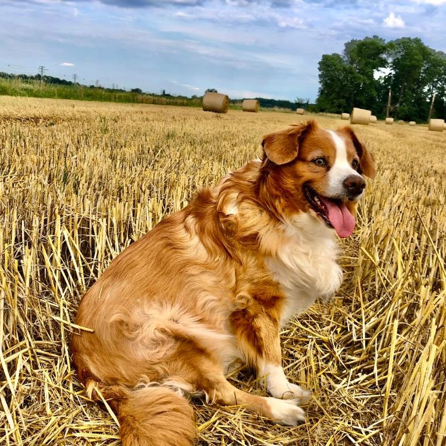
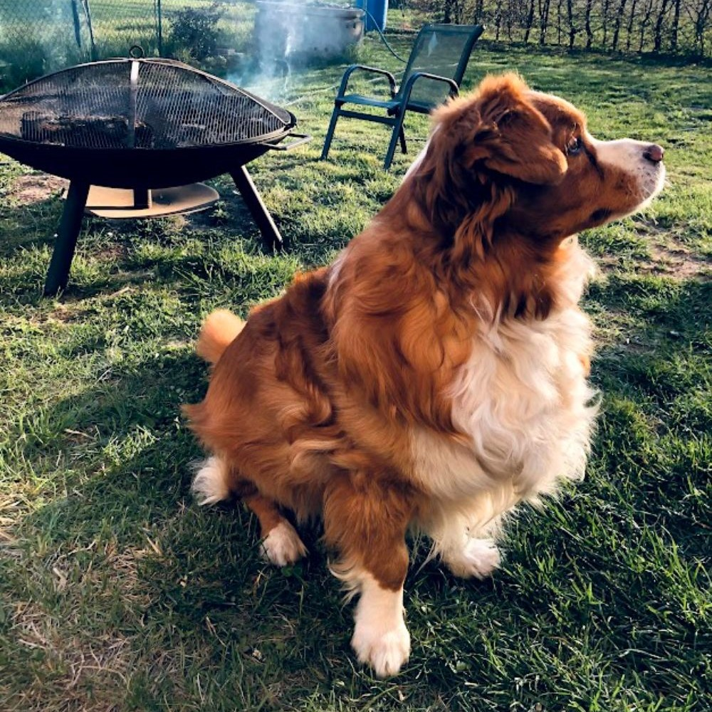
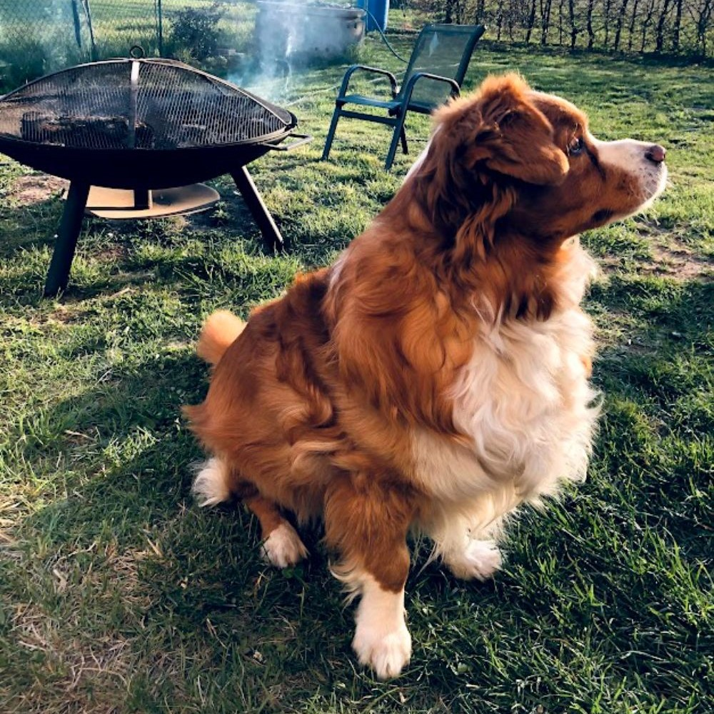
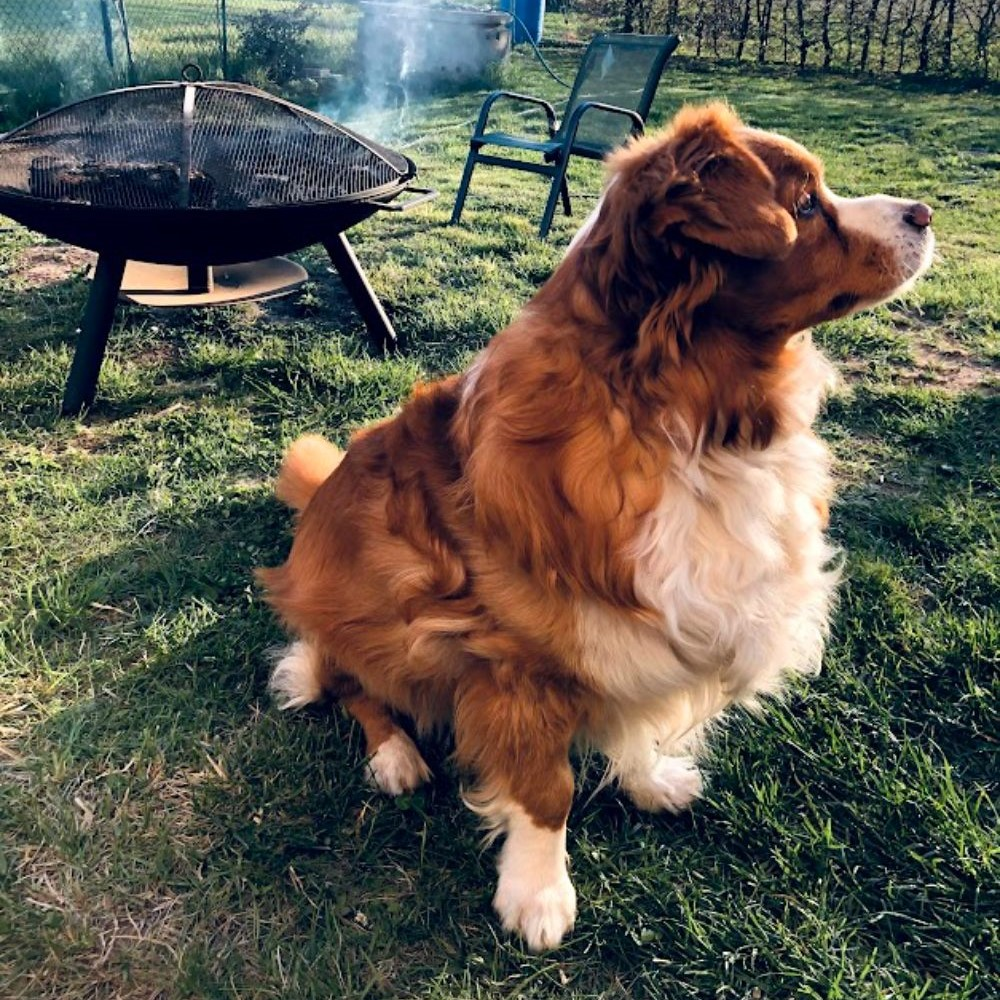
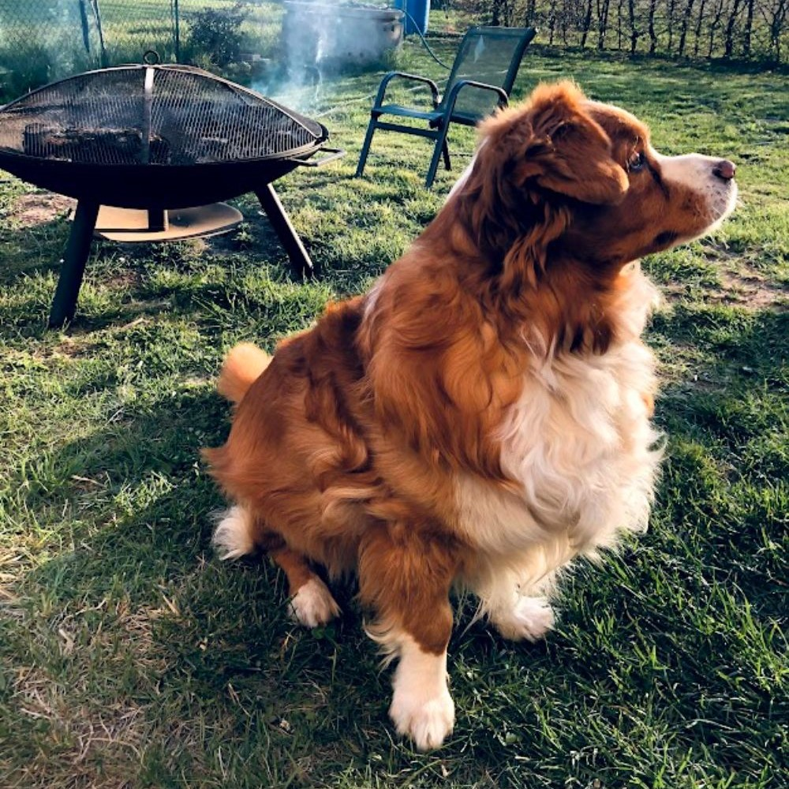

 


Náš klan si našel útulné místečko poblíž řeky Labe a zříceniny hradu Kunětická hora. Na našem malém plácku nás je celkem 7. Čtyři členové smečky jsou dvojnožci. Dva jsou velcí, a dva malí. Ta nejmenší se nám nejvíc podobá. Pořád nahlas štěká, válí se po zemi a hraje s námi na honěnou.
My ostatní jsme čtyřnozí. Když to vezmu podle stáří, tak první jsem já, Ťapka, pak je Hawkeye a nakonec náš čerstvý dospělák se zastydlou pubertou Bella.
Jmenuji se Ťapka, je mi už 11 let a stále jsem své rodině věrná. Moje rodina si pro mě jela do útulku v Hradci Králové, protože mě jako malinké koťátko našli v městském parku. V útulku jsem byla už pár týdnů, protože mě museli vypiplat a taky zbavit všech breberek a bacilů, které jsem si z parku donesla, ale vyplatilo se to.
Moje rodina je na mě hodná a já se s nimi mazlím, jak jen to jde. Je teda pravda, že dřív to bylo častěji, ale za to může příchod Belly. O tom se ale dozvíte, když budete číst dál.
Jo a nerada se fotím a raději zůstávám v pozadí, takže, kromě mé profilovky, tu mé další fotky nenajdete.
Hawkeyemu je 10 roků. Narodil se 18.1. 2014 a páníčkové si ho přivezli cca po 8 týdnech u maminky. Ze začátku byl doma a byl pěkně nepořádný, pořád po sobě nechával loužičky a hromádky. Já to vždy očichala, a řeknu vám, zrovna to nevonělo...
No ale časem se to naštěstí zlepšilo. Vycházeli jsme spolu celkem dobře, já jsem tu byla ten mazák a Hawkeye byl nováček, takže jsme spolu vyrůstali a trávili čas celkem spokojeně až do roku 2020, kdy k nám páníček přivezl nejmladšího člena smečky, mého největšího nepřítele - fenku Bellu.

Bellu k nám přiveyl páníček před Vánocemi v roce 2020. Byly jí odhadem asi 2 roky a byla "přeshraniční". Zachránili jí hodní lidé ze sousedního Slovenska z nějaké odlehlé vesnice, kde byla nejspíš uvázaná na řetězu a nikdo se jí nevěnoval.
Nebyla v moc dobrém stavu, všeho se bála, neznala společnost lidí ani psů, natož dalších zvířat. Po přjezdu se tedy bála i nás. Naštěstí je ale doteď ochotná za pamlsky udělat téměř cokoliv, takže s hodně trpělivosti, času, péče a lásky, kterou jí náš lidský klan (i Hawkeye) dával, tak se stala nedílnou součástí naší smečky.
No... i když, já jí moc nemusím, protože mě pořád loví. Od té doby, kdy je u nás, tak já jsem spíš kočka venkovní a mazlit se chodím, jen když je "čistý vzduch"